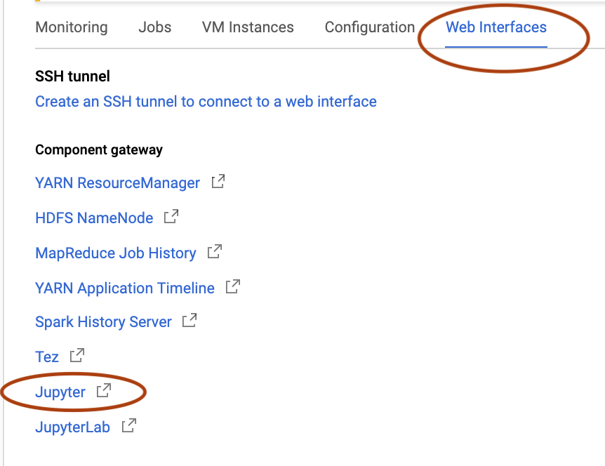

Running Jupyter Notebook and RStudio on CGP cluster
2019-09-15
Clusters are usually used for compute-intensive deep learning algorithms and Big Data crunching. When creating a cluster, CGP automatically installs Hadoop, Spark, Hive, and Pig.
However, the same cluster (since it is also a virtual machine) can run other applications, like Jupyter Notebook, RStudio, and even Docker images. In fact, GCP itself has instructions for installing Jupyter Notebook and RStudio on a cluster: (links: Running RStudio® Server on a Cloud Dataproc Cluster, and Install and run a Jupyter notebook on a Cloud Dataproc cluster)
Part 1. Create a cluster and run Jupyter Notebook.
Create a bucket (where you will save Jupyter notebooks and RStudio files). This bucket will be attached to the project and will keep existing for as long as you keep the project around (even if you terminate the cluster inside that project).
Create a project , then Dataproc -> Create Cluster / changed only zone to northeast-…. and change storage type to SSD
ATTENTION: Choose a correct cluster version: only Cluster version 1.4 has Python 3 pre-installed.
Choose whether you need Anaconda or Miniconda: (a link to help decide if you need Anaconda or Miniconda)
Designate the bucket.
The Jupyter notebooks will be saved in /bucket_name/notebooks/jupyter/
Click Create.
Click on your cluster, then “Web Interfaces”, then on Jupyter. The Jupyter Notebook will open in your local web browser.

Look around at what is already pre-installed on this cluster
You can access your cluster (which is a VM) with SSH and look around what is installed.
Check hadoop version (images here) spark-shell (image) (-> scala) hive no hbase (!) pig version 0.17.0
Part 2. Install RStudio server
Follow GCP instrustions: Running RStudio® Server on a Cloud Dataproc Cluster
Here is a recap:
image of Debian 9 commands
$ sudo apt-get install gdebi-core
$ wget https://download2.rstudio.org/server/debian9/x86_64/rstudio-server-1.2.1335-amd64.deb
$ sudo gdebi rstudio-server-1.2.1335-amd64.debAdd user “rstudio” with password “rstudio123” (for RStudio)
issue a gcloud command from your local computer
gcloud compute ssh \
--zone=northamerica-northeast1-c \
--project="drycluster" \
"cluster-7676-m" -- \
-L 8787:localhost:8787to view all these project values, GCP provides hints, just in different places :)
The R files are saved in RStudio user (that we created) home directory: /home/ruser/
- You can install packages in RStudio the usual way For example, knitr: Install -> CRAN packages window appears, start installation.
Copy RStudio files or folders into the bucket:
gsutil cp hello_world.Rmd gs://my_bucketTo download your work files onto your local computer, choose Download on the right of this file in the bucket.
To finish with the user “rstudio”, type “exit”, the prompt will revert to your usual cluster’s username. (The second “exit” command will disconnect SSH connection).
Part 3 (optional). Install Cloudera CDH Quickstart
It is possible to install Cloudera CDH Quickstart docker image just like on any other separate VM instance. Hypothetically, all three (RStudio, Hue, and Jupyter Notebook) could run at the same time.

Follow the same instructions as in
Cloudera Quickstart on Google Cloud Platform - Part 1
Cloudera Quickstart on Google Cloud Platform - Part 2: Getting Hue to Work
REMINDER: There is no option to stop a cluster. It has to be terminated when you are done.
Part 4. To clarify SSH connections
- If you don’t specify a username during SSH connection, your local machine’s username:
gcloud compute ssh \
--zone=northamerica-northeast1-c \
--project="beautiful-cluster" \
"my-cluster-m"Resulting prompt:
my_own_username_on_my_Mac@my-cluster-m:~$
- You can specify your main GCP account name as username:
./bin/gcloud compute ssh <my_GCP_account_name>@"my-cluster-m" \
--zone=northamerica-northeast1-c \
--project="beautiful-cluster"Resulting prompt:
my_GCP_account_name@my-cluster-m:~$
- You can specify any other username that you have already created (for example, for RStudio):
./bin/gcloud compute ssh <my_RStudio_username>@"my-cluster-m" \
--zone=northamerica-northeast1-c \
--project="beautiful-cluster"Resulting prompt:
my_RStudio_username@my-cluster-m:~$
- You could save time and create an SSH tunnel at the same time as you are SSH-connecting with your cluster, by adding an SSH flag at the end:
for Hue:
--ssh-flag="-L localhost:8777:0.0.0.0:8777"for RStudio:
--ssh-flag="-L localhost:8787:0.0.0.0:8787"
Example:
./bin/gcloud compute ssh <my_RStudio_username>@"my-cluster-m" \
--zone=northamerica-northeast1-c \
--project="beautiful-cluster" \
--ssh-flag="-L localhost:8777:0.0.0.0:8777"After this one command you can open local web browser with localhost:8777 or localhost:8787 .
(A hint for these values: GCP provides these hints in a “view gcloud command” sentence, it just takes a bit of time to figure where it is). In case of Dataproc Cluster, the hints are in Cluster details -> VM instances -> SSH -> “view gcloud command”
image here
Similar posts: Starting to develop in Spark with Jupyter installed in a Big Data cluster